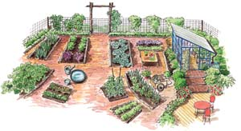

Developing an organic garden is a long-term proposition. Each infusion of compost or mulch that melds with soil nudges organic matter content higher, until eventually you have soil you can work with your bare hands. Do you see this process happening in your garden, along with other signs of maturity, such as fewer weeds and easier overall upkeep? As the season winds down, look around and consider your garden’s progress as a sustainable system. Then do what you must to enhance its efficiency in the seasons ahead.
One of the first signs of a garden’s maturity is the emergence of permanent beds (see Build Permanent Beds and Paths). They need not be raised beds because it’s the constancy, not the height, that matters. Why is permanence so important? Corridors and pathways become compacted each time you step on them, and after a while they can become so compressed that even weeds won’t grow there. Cultivated space, on the other hand, becomes downright fluffy if you avoid walking on it and add organic matter regularly. Soon the only cultivation will be a simple matter of forking the soil by hand between plantings.
In some of my terraced hillside beds that haven’t felt human footprints in years, when I lose my balance and fall in, I sink down 4 inches. Each such tumble squeezes out air (and squashes thousands of busy soil-dwelling microcritters). If you have a well-designed system of permanent beds, broad corridors and narrower pathways, you can concentrate water and fertilizer onto the areas where crops are growing. To improve upon the design you already have, make rough drawings with pencil and paper, and consider how various bed configurations might help your garden work better. Here are some things to keep in mind when you’re gardening for keeps.
Depending on your garden’s size, you may need only one main, wide corridor that can accommodate big things such as wheelbarrows, tillers or mowers, with secondary pathways branching off from there. A large garden may need two or three wide lanes. In addition to providing all-weather access, the main corridors serve as the garden’s utility area, so it makes sense to have water, compost and a spot for stashing tools, pots, stakes and buckets somewhere in this space. One of the best improvements I made last year was to build a sturdy work table next to the main compost pile; both are along the edge of the garden’s main corridor. The table is a natural magnet for tools and supplies, and it’s the perfect spot to groom veggies before they come into the house.
Wide corridors get a lot of traffic, but like the row middles in fruit orchards, they are not too compacted to support grasses, clovers and other low-growing plants. Letting corridors go green helps them double as habitat for ground beetles, earthworms and other beneficial life forms (some we can see and some we can’t). Clippings gathered from mowing the corridors can be used to mulch nearby beds.
What balance of bed and pathway dimensions gives the most efficient use of space? After experimenting with several bed sizes, agricultural researchers at the Samuel Roberts Noble Foundation research farm in Ardmore, Okla., settled on 40-inch-wide beds, separated by 20-inch-wide pathways as their high-efficiency choice. The Noble Foundation beds are raised, but 40 inches is also a good width for in-ground beds, because you can step over or straddle them.
Symmetry is always tempting, but don’t assume that your garden should consist of uniformly sized beds connected to a central corridor. As you play around with the best sizes for your permanent beds, you may find that a mix of bed sizes will work better for you in the long run.
For example, let’s say you grow sweet corn, winter squash, watermelons or other crops that need a block of space, so you will need two or more unusually wide beds. Other beds might be sized to suit trellised beans or peas, or tomatoes grown in custom-built cages. Smaller beds, on the other hand, make it easy to keep up with successive sowings of salad greens, radishes and other come-and-go veggies.
Bed length reaches a point of diminishing returns, too. If you have to keep trudging down to the end of a long row and make a turn to get to the other side, you’re working too hard. This problem is easy to fix by using boards as temporary overpasses that allow you to walk across wide beds. Whenever a task requires you to step on a permanent bed, standing on a board will distribute your weight and limit compaction. When you’re not using your “garden boards” as standing stations, they can come in handy for holding down fabrics or trapping slugs.
The pathways between beds are important work spaces, and they have an uncanny talent for becoming broader as the season progresses. When working permanent beds that are not framed, you will probably need to re-dig bed edges that have turned into pathways at least once a year to undo the damage caused by compaction.
For the first year or two, you can let pathways go green and mow them, but as compaction increases over time, very few plants are likely to grow in heavily used pathways. Just like trampled footpaths in the park, repeated footfalls eventually make garden pathways unsuitable for plants. This is good! It means less mowing or hoeing, and you should be able to keep pathways clear with a durable mulch, such as wood chips, which are often free from tree-trimming crews. You can place sections of wet newspaper or cardboard under wood chips or any other mulch to enhance weed deterrence, but stay away from non-biodegradable weed barriers. After organic matter accumulates on top of fabrics or plastics, weeds start pushing their roots through the stuff, and in my experience you end up with a mess of weeds and shredded plastic or geotextile fibers.
Factor in appearance as you choose pathway mulches. If your vegetable garden is your favorite destination in your yard, let it look the part. There is nothing wrong with going for the well-groomed look of shredded hardwood mulch (undyed, of course). Sawdust mulch keeps its neat, good looks all summer, or you can use hay, straw or pine needles. Experiment with various pathway treatments using locally available materials until you find a plan that pleases your eyes, your feet and your garden.
If you divide your garden into zones based on how much and how often each area is used, you will probably find that culinary herb beds, composting spots and the clutter-prone area near the water faucet receive the heaviest traffic. Bringing these elements together into a garden control center can streamline maintenance in a hard-working food garden.
We know better, but few of us put away all of our tools and toys at the end of a gardening session. At my house, digging forks and hand trowels became much easier to find after I marked the handles with red plastic tape or paint, and I seldom lose brightly colored gardening gloves, buckets or trugs.
You will never again drag a hose over a newly planted seedling if your beds are protected by hose guides, which can be purely practical (pieces of 1-inch pipe placed over rebar stakes) or as whimsical as you dare (old golf clubs or croquet mallets stuck into the ground). The best hose guards rotate when a hose rubs against them, so any weatherproof cylinder that can be popped over a sturdy stake will do. To blend function with beauty, cut pipe into 12- to 16-inch pieces, paint the pieces with metallic copper paint, and then use silicone caulk to mount large marbles (such as what you’d find at toy stores) in one end of each piece. Slip over rebar stakes that protrude about 10 inches from the ground, and you have faux copper hose guides with glass finials.
Framing permanent beds is always optional, but dressing up your garden’s front edge looks sharp and can add to its versatility. No need to spend time and money to build frames from lumber. High-visibility edges can be defined with logs, recycled cedar fence rails, pieces of firewood or rocks placed over strips of old carpeting. A friend laid a single run of concrete blocks down the side of his garden closest to the water faucet, filled the openings with good soil, and then helped his 5-year-old turn the edge into his own little garden. Pieces of terra-cotta chimney pipe or drainage tile can be set into the ground vertically, filled with soil, and used to grow mints that might otherwise grab way too much space.
If you maintain the outer edges of your garden with your lawn mower, a hard edging may end up complicating your life, but the opposite will happen if you edge beds with flowers and herbs. Fragrant annual sweet alyssum attracts beneficial insects and often reseeds itself, and dwarf curly parsley is always a dazzler in perimeter plantings. Dwarf French marigolds with dwarf blue ageratum make a colorful, low-maintenance edge combo for the warm summer months. If you prefer, keep a clean edge with a ribbon of grass clippings allowed to accumulate where they fall. When it comes to gardening for keeps, the simplest ideas are usually the best.
|
 ELAYNE SEARS It will take a few years to develop a garden as pleasant to work in as this one. |
ELAYNE SEARS These homemade hose guides make it easier to move hoses around in your garden. |
ELAYNE SEARS Plan a place to relax and enjoy the fruits of your labor. |